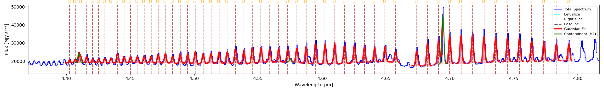
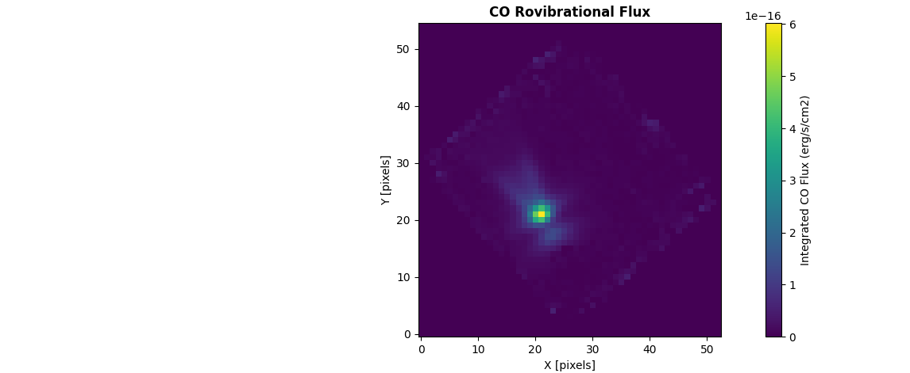
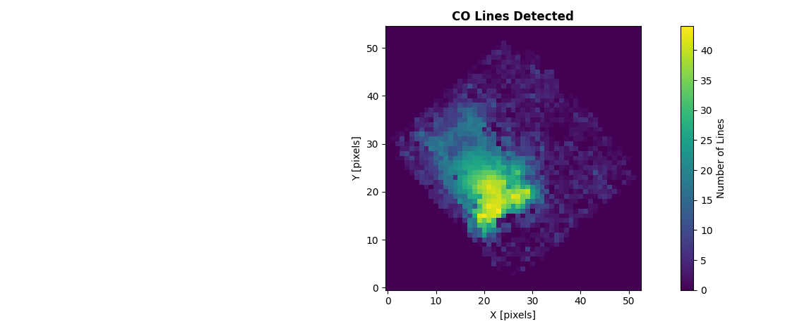
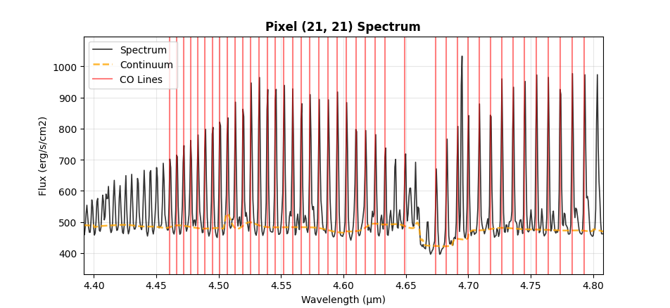

CO Flux Extraction
Extract and measure carbon monoxide (CO) line fluxes from spectral data cubes. This specialized tool analyzes CO emission or absorption across multiple rotational transitions.
Starting CO Flux Extraction
Access Tool
Click HITRAN menu in toolbar
Input min/max wavelengths and click on HITRAN button
Choose molecule, isotopologue number, and vibrational level
(Optionally) Refresh HITRAN query
The spectrum now shows the lines given those parameters. Hovering over a line shows its species, its wavelength, its transition, and its Einstein coefficients You can remove a line by clicking on it in the spectrum or by clicking on the SPECIES button which renders a table with all the current species.
Load Contaminating Lines
Additionally (and optionally), you can load a catalog of contaminating (non-target) lines so both CO Flux Map and Multi-Gaussian Fit (below) can account for them instead of letting their flux distort a nearby CO line’s measurement.
Click on Load Contaminating Lines and load a .csv file with unwanted lines
IMPORTANT: Make sure this file has a column called ‘wavelength’.
Loading the catalog doesn’t retroactively update results you’ve already produced – run CO Flux Map / Multi-Gaussian Fit again after loading it for the fit to pick it up.
Multi-Gaussian Fit
Fit every currently-plotted HITRAN line at once via linear least squares. Each line’s
center is fixed at its catalog wavelength, and its width comes from the instrument’s own
spectral resolution rather than being fitted – these lines are instrumentally unresolved,
so width is a property of the instrument, not something to estimate per line or per fit.
With both fixed, solving for every line’s amplitude becomes a single linear solve instead
of an iterative nonlinear one: no risk of a weak line’s fit window drifting off it, and
overlapping lines are disentangled correctly because they’re all solved for together
rather than one at a time. fit_hitran_lines() in cube_explorer.api runs this exact
algorithm (see Using the API below); it is not an approximation of the GUI button, the
two share the same code path.
If you’ve loaded a contaminating-lines catalog (above), any contaminant that falls in the fitted range and is far enough from every requested line (at least ~2σ) gets its own component too, so its flux is absorbed there instead of leaking into a nearby CO line’s amplitude. It’s drawn as a green outline on the plot and listed separately in the results – never counted toward the CO line total. A contaminant too close to a requested line to reliably tell the two apart (<2σ) isn’t given its own component; that CO line’s result gets a note instead, flagging the unresolved nearby contaminant rather than reporting an unreliable split.
Perform automatic continuum on the 1D spectrum by clicking on Continuum Tools → Automatic Continuum → Continuum Line
Click on Multi-Gaussian Fit
A Gaussian curve is overlaid on the spectrum for each plotted line, and a results window opens with one block per line, plus a separate section listing any contaminating lines that got their own component.


56 CO v=1→0 lines (4.40–4.80 µm) fitted simultaneously via Multi-Gaussian Fit on a NIRSpec G395H spectrum. The green curve near 4.69 µm is an H2 line from the loaded contaminating-lines catalog, fit as its own component so it doesn’t distort the neighboring CO lines’ amplitudes.
Reading the results
Each line’s block reports two groups of numbers:
Catalog identification —
Line λ,Transition,A coeffandE_upper, copied straight from the HITRAN entry, not measured. Useful for cross-checking that the fit actually locked onto the line you think it did.Fitted parameters —
Center,Amplitude,Sigma,FWHM,Integrated AreaandR².Centeris always exactly the catalog wavelength – it’s fixed, not fitted – andSigmafollows the instrument’s spectral resolution rather than varying line to line the way a free nonlinear fit’s would. Units follow the same rules as the 1D page (1D Spectrum Fitting) —Integrated Areais erg/s/cm² wherever the header supports the conversion.
A CONTAMINATING LINES section follows the fitted lines whenever any contaminant got its own component: wavelength, species, amplitude and area for each – these are not part of the CO line count or total above.
Using the API
from cube_explorer.api import load_cube, fit_hitran_lines
from cube_explorer.line_catalog import load_contaminating_lines_catalog
cube = load_cube("data.fits")
contam = load_contaminating_lines_catalog("path/to/ContaminatingLines.csv") # optional
results = fit_hitran_lines(
wavelength=cube.wavelength,
spectrum=cube.spectrum,
molecule='CO',
wavelength_min=4.40,
wavelength_max=4.80,
v_upper=1, # v=1->0, same filter as the HITRAN dialog
v_lower=0,
header=cube.header, # Required for the erg/s/cm2 conversion
wave_unit=cube.wave_unit,
contam_catalog=contam, # omit (or None) to skip contaminant handling entirely
)
detected = [r for r in results if r['success']]
print(f"Fitted {len(detected)}/{len(results)} lines")
for r in sorted(detected, key=lambda r: r['wavelength']):
print(f" {r['wavelength']:.6f} um area={r['area']:.4e} {r['area_unit']} R2={r['r_squared']:.4f}")
Fitted 56/56 lines
4.402678 um area=1.0164e-16 erg/s/cm² R2=0.3553
4.407041 um area=1.2351e-16 erg/s/cm² R2=0.8765
4.411493 um area=1.9398e-16 erg/s/cm² R2=0.8866
...
4.773583 um area=6.2902e-16 erg/s/cm² R2=0.8193
4.783296 um area=5.7530e-16 erg/s/cm² R2=0.5895
4.793124 um area=5.8123e-16 erg/s/cm² R2=0.6617
This reproduces the worked example above exactly: fitted centers, areas and R² match the
screenshot’s results window to the last reported digit, because it is the same fit
(fit_hitran_lines is what the GUI button calls). Contaminating lines from contam
that got their own component aren’t in results at all – they exist purely to keep the
CO lines’ amplitudes honest; if you need their values too, they’re only currently exposed
through the GUI’s results text, not this return value.
Important
As with fit_line, pass header/wave_unit to get area in erg/s/cm² —
without them it stays in the cube’s native units, and area_unit always tells you
which one you got. There is no continuum-fitting step in the example above because
none was given: leaving continuum unset fits one automatically with
fit_continuum(), the same fallback the GUI uses when you have not run Automatic
Continuum interactively. Pass your own continuum array to use a continuum you
already fitted instead.
Analyze CO for All Pixels
Extract a CO flux map across every spatial pixel:
Click on CO Flux Map.
A popup explains that continuum subtraction runs automatically per pixel, using default parameters that work well for typical spectra. Click No to use those defaults, or Yes to open the same parameter dialog as the manual Automatic Continuum tool and set your own values instead.
A preview shows the brightest pixel within your wavelength range, with the (deduplicated) HITRAN lines marked – a sanity check before committing to a full-cube run. Click YES - Extract Map to proceed.
If you’ve already run an extraction with the same wavelength range and continuum choice, you’ll be offered the cached results instead of re-running.
Progress Monitoring
The progress dialog updates per pixel as the cube is processed.
Output Products


Integrated CO flux per pixel.


Number of CO lines detected per pixel, for the same cube. Switch between this and the flux map with the Display dropdown in the results window.
CO Flux Map: integrated flux per pixel
Detection Count: number of lines detected per pixel
Export as FITS / Show Statistics buttons in the results window
Inspecting Individual Pixels
With Pixel Select on (the default), clicking a pixel on either map opens that pixel’s fit:


Spectrum for an individual pixel, zoomed to the fitted wavelength range, with the fitted continuum and each CO line marked in red.
Turn Pixel Select off to zoom/pan the map freely instead of reopening this dialog on every click.
Using the CO Flux API
Extract CO fluxes programmatically for single spectra or full data cubes, using
extract_co_flux() and create_co_flux_map() – the same algorithm as the GUI’s
CO Flux Map button.
Note
This is a different algorithm from Multi-Gaussian Fit / fit_hitran_lines()
above, not a scripted version of it, and the two don’t produce identical totals for the
same spectrum – expect them to land within roughly 10-20%, not match exactly.
extract_co_flux/create_co_flux_map fit every line in a 0.1 µm wavelength chunk
simultaneously against one shared local continuum, via nonlinear least squares
(curve_fit), and only count a line if it clears a per-pixel signal-to-noise
threshold first (snr_threshold, default 3σ). fit_hitran_lines fits every
requested line at once via linear least squares with fixed centers/widths, with no SNR
gate at all – it fits whatever you selected, weak lines included.
The gap between the two is usually dominated by that SNR gate, not a disagreement about
the underlying signal: CO Flux Map fits pixel-by-pixel, and a real but weak line often
can’t clear 3σ in any single noisy pixel, so it contributes nothing to that pixel’s
flux. fit_hitran_lines fits one combined, much higher-SNR spectrum directly, so it
can recover that same real flux. Summed over many pixels this adds up to CO Flux Map
running systematically lower. Lowering snr_threshold narrows the gap, but that’s
trading a real problem (missing weak, real flux) for a different one (counting noise as
detections) – it isn’t a way to make either number more correct, just a way to make
them agree.
Extract CO Flux from a Single Spectrum
from cube_explorer.api import load_cube, extract_co_flux
cube = load_cube("data.fits")
co_result = extract_co_flux(
wavelength=cube.wavelength,
spectrum=cube.spectrum,
co_catalog_path="path/to/CO_catalog.ecsv",
header=cube.header, # Required for the erg/s/cm2 conversion
wave_unit=cube.wave_unit,
)
print(f"Total CO flux: {co_result['co_flux']:.4e} {co_result['flux_unit']}")
print(f"Number of lines detected: {len(co_result['detected_lines'])}")
print(f"Mean continuum level: {co_result['mean_continuum']:.3f}")
Important
As with fit_line/fit_hitran_lines, pass header/wave_unit to get
co_flux/contam_flux in erg/s/cm2 – without them they stay in the cube’s native
units, and flux_unit always tells you which one you got. Continuum subtraction runs
automatically (subtract_continuum=True by default, same defaults as the GUI’s
Automatic Continuum) – there’s no need to pre-subtract it yourself. Pass your own
continuum_params dict to override those defaults, e.g.
continuum_params={'window_size': 101}.
Create CO Flux Maps
Generate flux maps for the entire data cube:
from cube_explorer.api import load_cube, create_co_flux_map
cube = load_cube("data.fits")
# Uses HITRAN automatically by default, or pass co_catalog_path for a custom catalog
co_flux_map = create_co_flux_map(
cube,
wavelength_min=4.70, wavelength_max=4.80,
n_jobs=4,
)
print(f"CO flux map shape: {co_flux_map['flux_map'].shape}, unit: {co_flux_map['flux_unit']}")
print(f"Mean CO flux: {co_flux_map['flux_map'][co_flux_map['flux_map'] > 0].mean():.4e}")
print(f"Pixels with CO detection: {(co_flux_map['detection_map'] > 0).sum()}")
Continuum subtraction works the same way as extract_co_flux above – automatic per
pixel, with the default parameters unless you pass your own via continuum_params. There’s
no separate header argument here since cube (and its header) is already the first
argument; the erg/s/cm2 conversion is attempted automatically, and flux_unit tells you
whether it succeeded.
Expected Catalog Format
The CO catalog file should be in ECSV (Enhanced Character Separated Values) format with columns:
line_wave_um: Wavelength in micrometersspecies: Molecule name (e.g., “CO”)transition: Transition description (e.g., “v=1->0, J=4->5”)a: Einstein A coefficient
Columns are loaded as-is, with no validation – a file missing line_wave_um or
species won’t fail at load time, only later inside the fit, as a KeyError.
Tips for CO Flux Extraction
Ensure your wavelength calibration is accurate (errors affect line identification)
The algorithm automatically measures line widths and integrates flux
For more control over individual line fits, use
fit_hitran_lines()instead